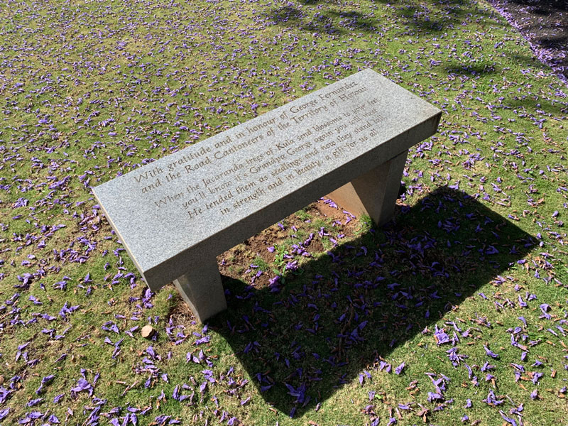

Five jacaranda trees are planted at the intersection of Kula highway and Halealaka highway. During the bloom, the jacaranda petals create a purple carpet between the trees. There's also a memorial bench dedicated to George Fernandez, the road cantoneer who planted and tended to the trees.

George Fernandez memorial bench at five trees in Upcountry Maui.With gratitude and in honour of George Fernandez and the Road Cantoneers of the Territory of Hawaii. When the Jacaranda trees of Kula send blossoms to your feet you'll know it's Grandpa George again you will meet. He tended them as seedlings and now they stand tall in strength and in beauty, a gift for us all.

 With gratitude and in honour of George Fernandez and the Road Cantoneers of the Territory of Hawaii. When the Jacaranda trees of Kula send blossoms to your feet you'll know it's Grandpa George again you will meet. He tended them as seedlings and now they stand tall in strength and in beauty, a gift for us all.
With gratitude and in honour of George Fernandez and the Road Cantoneers of the Territory of Hawaii. When the Jacaranda trees of Kula send blossoms to your feet you'll know it's Grandpa George again you will meet. He tended them as seedlings and now they stand tall in strength and in beauty, a gift for us all.
 Jacaranda trees along Hanamu Road, Makawao.
Jacaranda trees along Hanamu Road, Makawao.

 Seabury Hall high school, Maui.
Seabury Hall high school, Maui.